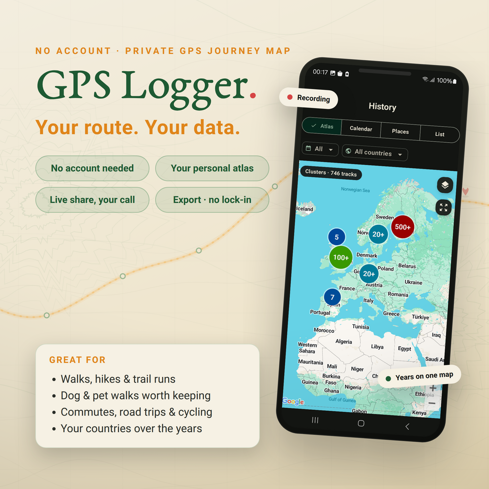

Record a route with the screen off
Start a user-visible recording, lock your phone, and keep a clean track for walks, hikes, rides, runs, commutes and drives.
Private GPS logger · GPX recorder
Record walks, hikes, rides and road trips with the screen off. Build a private route history on your phone, export GPX/KML anytime, and share live location only when you choose.

Tap record before a walk, hike, ride, run, drive or field visit.
Browse saved tracks as a map, calendar, places atlas and country view.
GPX & KML per track, plus an all-history ZIP backup. Always portable.
Optional live sharing relays your current position, not a cloud route trail.
Why people use GPS Logger
Use GPS Logger when Google Timeline is no longer enough, when another app keeps GPX behind a wall, or when you need screen-off route recording for a hike, commute, road trip or field visit without creating a social fitness profile.


What people install it for
Start a user-visible recording, lock your phone, and keep a clean track for walks, hikes, rides, runs, commutes and drives.
Turn saved tracks into a personal atlas: route map, tracked days, repeated places, countries and per-track stats.
Import old GPX tracks, export GPX/KML whenever needed, and keep a full-history ZIP backup outside the app.
Send a resettable code when someone needs to follow your live position. Stop sharing and the live session is removed.
Use route logs for road trips, field visits, mapping checks, outdoor notes, or simply remembering where you have been.
Use open files and local-first storage so your history remains useful even if you later change tools.
See it in motion

How it works

Tap once and go. It tracks in your pocket while you live your day.
Months later, browse a lifetime map, your places and your countries.
Send a live dot with a resettable code and a follower limit you set.
Feature set
Start a recording for any walk, hike, ride, drive, run or trip. It keeps tracking in the background and saves your route, distance, duration and speed when you stop.
A lifetime map of everywhere you've been, a calendar of tracked days, the places you keep returning to, and per-track maps with a speed view and full stats.
Share your current position with a resettable code and a follower limit you set (1–20). Only your current position is stored, and it's removed after you stop.
Export individual tracks as GPX or KML, or back up your whole history as a GPX ZIP. Open formats, your data, anytime.
Motion-adaptive tracking reduces GPS frequency when you're still. A foreground notification shows while recording, with optional auto-start after a reboot.
No account to record. Routes live on your phone, live sharing is opt-in, and you can reset your share code or delete tracks whenever you like.
Real app screens


GPS logging guides
Tutorial
Step-by-step route recording, background tracking, GPX export and whole-history backup.
Screen off
Background location, foreground notifications and battery settings for reliable route logs.
Privacy
What stays on your phone, when live sharing sends data, and how to keep a private journey map.
Elevation
Fix noisy altitude, smooth impossible spikes and recalculate elevation gain from terrain data.
Comparison
Choose between a private route journal, a training network, or both.
Import & migrate
Bring old routes into one atlas from loose GPX files or ZIP backups.
Workflow
Export portable tracks for mapping, GIS, trip archives and route analysis.
GPS Logger runs as a foreground service so recording continues when the screen is off or you switch apps, with a persistent notification while it tracks. Motion-adaptive sampling keeps battery use low, and optional auto-start can resume recording after a reboot.
Routes stay on your phone unless you choose to live-share or export them. Live sharing stores only your current position and removes it after you stop. Map display and diagnostics use service providers described in the privacy policy.
FAQ
Yes. GPS Logger runs a foreground location service while recording, so tracking can continue with the screen off or while another app is open. For very long sessions, follow the in-app battery guidance so Android does not suspend it.
No. Recording starts only when you start it, and stops when you stop. The one exception is optional auto-start after a reboot, which you enable yourself.
On your device. Nothing is uploaded unless you choose to live-share your current position or export a file.
You share a resettable code and pick a follower limit (1–20). Anyone with the code sees only your current position on a live map. The position is removed when you stop, and unattended positions auto-delete within 7 days.
Yes. Export any track as GPX or KML, or back up your entire history as a GPX ZIP. There's no lock-in.
Yes. You can import GPX files you choose, including ZIP backups. The app will show any current import limits before you start.
Yes. Install the app and record real routes first. If you later need more capacity, the app explains the available options in context.
Start with one walk, ride or drive. Export it as GPX, keep it in your atlas, or simply let your private route history grow over time.
Free to start · No ads · Privacy-first